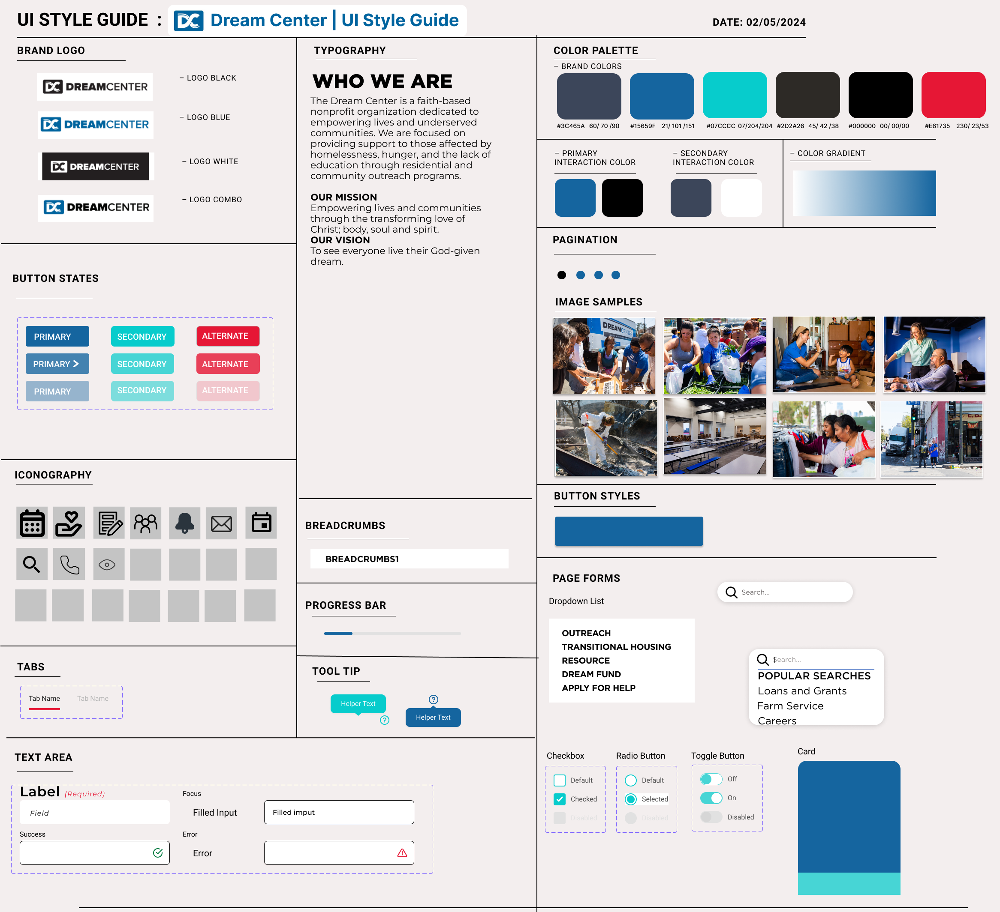

About
Dream Center is a Los Angeles-based nonprofit organization dedicated to aiding populations impacted by homelessness, hunger and the lack of education in Los Angeles through residential and community outreach programs. Our team aimed to revamp Dream Center's website to enhance the donation and volunteer experience.
The Problem
Potential supporters of Dream Center want to help but may be limited by time constraints. They also seek clear information about the organization's mission, history, and impact. Users desire diverse opportunities for involvement beyond monetary donations, and want to understand where their contributions are going and the actual difference they are making.
The Goal
Our goal is to redesign the Dream Center website to address these frustrations by:
- Providing users with a calendar of diverse volunteer events, ensuring they can easily coordinate their volunteer work based on their time and interests.
- Offering transparency on the organization's impact by showcasing the real-world results of donors' and volunteers' contributions.
- Providing users with personal dashboards to track their own contributions and navigate a clear list of available volunteering opportunities to simplify the sign-up process.
User Research
Before we started user research proper, we first designed a proto-persona describing our target user, a prospective donor and volunteer for Dream Center.
Proto-Persona
As we designed our proto-persona, we anticipated that users would:
- Have a strong interest in volunteering.
- Be frustrated with aligning organizations to personal interests, a lack of responses from non-profits, and unsure of fund allocation.
Usability Heuristics Analysis
We then analysed the current usability heuristics of the Dream Center: Los Angeles website. There were several great aspects to current site, but we did note some areas of improvement.
Firstly, the website has a sign-up and log-in function, but it is not present on the primary navigation bar. It is only present on the "Donate" page, as shown below:
This is because an account does not pertain to any other function on the website besides a rudimentary way to save payment methods and to view donation history. The location of this log-in/sign-up function is not easy to find. This allowed us to imagine the log-in/sign-up function as always present on the main site's navigation, as well as integrating a user account in more functions of the website for a more unified experience.
Addtionally, in the website's primary navigation bar, it is difficult to identify how to view the available volunteer opportunities. There is also no search bar navigation available. Thus, it is not easily accessible if a user does not understand in which of the dropdown categories they might find the information they are looking for.

User Survey
We conducted a user survey. Unfortunately, finding a sample comprised only of Dream Center volunteers and donors was not feasible for us, so we surveyed anyone who has interacted with any nonprofit organization.
User Interviews
We conducted five user interviews. The key insights of these interviews taught us that users value having a website that is up-to-date and clearly presents the organization's identity and mission. They need to understand how they can help, different ways they can help, and what impact they are helping to make.
User Persona
We then created an updated user persona by synthesizing the insights gained from our user research.
Definition & Ideation
With an idea of what users need, we start to define and ideate what how to carry out our redesign.
Competitor Analysis
Our direct competitors were nonprofit organizations with a similar mission and audience to Dream Center: Midnight Mission, PATH, and Salvation Army. Our indirect competitors included Goodwill and A Place Called Home, other nonprofit organizations that serve a different audience but nevertheless involve participation and donations.
We noted the readability of each of these websites' navigation and display of their mission. We also noticed similarities in features. All of them have a prominently displayed Donate call-to-action button that would take you to the portal to donate. They had also had some form of volunteer sign-up, but it would be located in different places, but more commonly under a "Get Involved" option in the dropdown menu. We admired A Place Called Home for their event calendar feature which let users view upcoming events without first having to sign up. We also were inspired by PATH's graphics that displayed statistics that reported their organization's impact.
Feature Definition and Prioritization
We created an I Like, I Wish, What If chart and a Feature Prioritization Matrix that allowed us to vote on, define, and organize ideas for features based on feasibility and originality.

We planned to execute the following ideas in the "Now" and "Wow!" sections to serve our user's needs while imagining more advanced ideas for future features in the "How?" section.
- Key features in the “Now” portion: making the website easily readable, easily to access main utilities
- More original and advanced ideas near the “Wow!” section: An event calendar, user dashboard, impact report
- Interesting “How?” ideas for the future: Quiz to match volunteers, VR experience, better donation tracking
By developing a new website for the Dream Center with a transparent reporting system of use of donated funds, a updated event calendar system, and a personalized dashboard, we help prospective volunteers and donors to solve roadblocks in trusting the organization, getting involved, and staying motivated.
User Journey
Our user persona, Jessica Gates, is actively searching for an organization that supports individuals affected by homelessness, hunger, and lack of education. During her quest, she discovers the Dream Center website and is eager to explore opportunities to get involved. She is specifically seeking details on how to join their volunteering services.
Her goals are to:
- Volunteer and get involved with Dream Center in a way that aligns with her personal goals.
- See how her donations are used by Dream Center.
- Jessica searches online for organizations for a cause she believes in. After some time, she happens upon the Dream Center website.
- Her curiosity is piqued looking at the home page. It has eyecatching graphics, and she sees their mission upfront and likes their cause.
- However, Jessica doesn't know if she can trust Dream Center. She looks for more information.
- From clicking "Our Impact," she finds the transparency reporting system to view how donated funds are being used, and feels more trusting.
- Jessica decides she wants to get involved, but she can't donate much money. She looks for how she can volunteer.
- Jessica finds and reads the calendar of volunteer events and explores the details of the event she is interested in, such as date, time, location, and the specific tasks involved.
- Jessica identifies a volunteer event that matches with her schedule, and that is a part of a program that resonates with her interests and skills. She feels a personal connection to the program.
- Jessica decides to commit and clicks on the event's sign-up button.
- She recieves a confirmation email with additional details about the event. She also is prompted to create an account. When she signs up, she accesses a personal dashboard showing her contribution history, a list of upcoming events, and messages from fellow members of the organization welcoming her. She feels connected to Dream Center and motivated to keep contributing.
Card Sorting
We then redesigned the information architecture of the website to help users find the information and utilities they want to access more easily.
Through the activity of card sorting, we worked out the main categories on the primary navigation bar: About Us, Our Impact, Programs, Volunteer, Gain Experience, and Donate. Volunteer and Donate were previously grouped under "Get Involved," however, the having them as two discrete choices helps users more easily find what they want to do.
Additionally, the utilities of Contact Us, the Event Calendar, and the User Dashboard were also added to the primary navigation and accessible at all times. We also listed the functions that would be located on the User Dashboard.
The same important information and functions of subscribing to the email newsletter, Dream Center's address, and social media links were kept in the footer.
Testing & Iterating
With our plans, we began to formalize the structure of the website and create prototypes we can test and iterate upon.
User Flow
Using the information architecture from our card sorting, we constructed a user flow. The user would either want to volunteer, donate, or view the organization's impact. We designed the primary navigation to make these paths as seamless as possible. When signing up to volunteer or donate, the user would be directed to create an account so that they may view the User Dashboard. From the User Dashboard they can view their contribution history and upcoming events.
A part of the flow not pictured here is that the list of Programs would link to the individual pages of each program, that would each have links to volunteer and/or donate to them, to highlight their impact on the Impact Report, and to view their events on the Event Calendar. This has yet to be built out.
Sketches
We then sketched out what the user interface might look like.
Digital Wireframes
Lo-fi Prototype
We made slight changes from our digital wireframes to lo-fi prototypes based on teacher feedback, such as increasing the breathing room between elements on the home page.
Usability Testing and Iterations
We then took our lo-fi prototype to conduct usability tests. The questions we wanted to answer with our test are:
- Will users be able to reach the Volunteer Opportunities page easily?
- Will users be able to identify the search, calendar, contact, and login buttons on the home page?
- Will users be able to find details about the "Our Impact Report"?
Mid-Fi Prototype
Hi-Fi Prototyping
After nailing the structure of the user interface, we moved refine the visual design's colors, imagery, typography, and UI patterns.
UI Moodboard
In assembling the moodboard, we viewed other nonprofit websites, including some that we included in our competitor analysis, to find colors, imagery, and UI patterns that encouraged users to give. We liked the existing authoritative, clean look of white, black, blue, and navy, but also liked more warm and vibrant colors that felt welcoming and evoked community.
Style Guide
Dream Center has somewhat of an existing style guide with their logo, color palette, and typography that we wanted to preserve. We added the accent color of red to bring more excitement and better highlight certain elements in our new features. We also added new icons to represent our new features.

Conclusion
In a group project, we practiced how to divide and conquer our work, and to ask for help from our team members when we needed it. We also learned how to incorporate an existing style guide into a website redesign.
Our next steps beyond this three-week working period would be to fully build out the program pages, the event calendar's filter system, fully integrate the impact report with a interactive live tracking system across the program and user dashboard pages, and conduct A/B testing in our hi-fi prototype.
This redesign project involved extensive user research and testing to create new features for Dream Center's website. These features serve the needs of prospective volunteers and donors and can be adapted to improve other nonprofit websites.